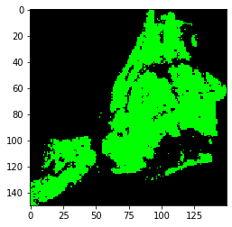

COVID-19 Challenge
Authors: Trey Gilliland, Tommy Gomez, Jason Mohabir, Matthew Otto
To better understand how COVID-19 has spread amongst different demographics, we visualize how many cases each zipcode relative to its population. This will allow us to see how areas across the city have been impacted differently.
This animated graph shows how coronavirus spread in different zipcodes throughout April. Hover over any region to see more information about it.
From this visualization, we can see that West Queens has the highest number of cases in the city and Willbrook has the highest number of cases relative to its population. Information like this was useful in generating and interpreting our model predicting the most important demographic factors determining spread rate of COVID-19.
COVID-19 Simulated Random Spread

This image shows what the spread of a disease similar to COVID19 would look like if it was truly random. The R0 value, the value indicating how many people each infected person infects, is about 3.5 for COVID19 without outside interference. Furthermore, this model estimates that about 1/20 close contacts with a COVID19 carrier will lead to a new infection. This model does not match the real world spread, indicating that outside forces, likely different demographics, strongly influence who contracts COVID19.
Furthermore, this model combined with the data found in a 2007 study on effectiveness of different interventions on respiratory viruses (which can be read here) indicates that mandatory mask and glove use would be enough to lower R0 to 0.48. This is below 1, and would therefore imply that these interventions could serve as a replacement to quarantine and social distancing.